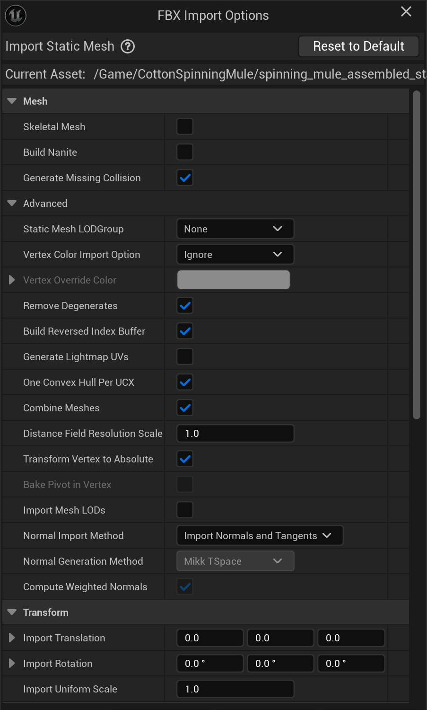
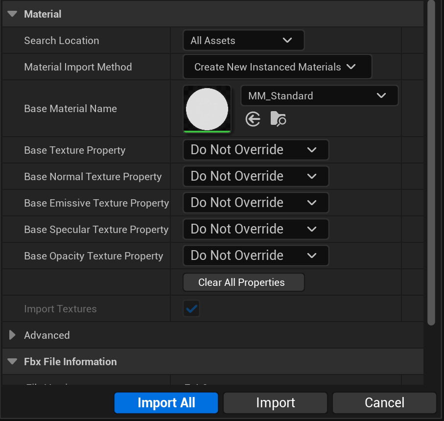

Unreal Guide
Simple Export ships with an FBX preset for Unreal. Select the correct preset
in Properties -> Output -> Simple Export -> Preset. The preset ensures that the following settings are configured
correctly.
Export to Unreal
Exporting static assets to Unity is straightforward and only requires 3 simple steps:
Step 1: Select the UE-Default Preset
Make sure the UE-default preset is selected
Step 2: Create an Export Collection
Create an export collection - that will now automatically apply the settings for Unity. This can be done by using the plus button in the Export List, right-clicking on the collection in the Outliner or right-clicking on the parent object in the 3D Viewport
Step 3: Move the Collection to the Origin
Select Move by Collection Center in the Pre Export Defaults to move the collection to the origin based on the collection offset. This is important for Unity, as it expects the pivot point of the mesh to be at the origin.
Step 4: Export the Collection
Export the collection from the Export List, the Outliner or by exporting all selected collections.
Import to Unreal
When importing the FBX file into Unreal Engine, make sure to adjust the import settings as follows:


Exporting Animated Characters
Rigged, animated characters (an armature with a skinned mesh and one or more Actions) use a separate preset from
static meshes: UE-animation. The static UE-default preset intentionally exports no animation at all - using it
on a rigged character will give you the mesh and skeleton with no motion. UE-animation bakes every Action in the
file as its own FBX take, so Unreal's importer splits them back out into individual Animation Sequences.
Step 1: Select the UE Animation Preset
Make sure UE-animation is selected as the Export Collection Preset, instead of UE-default.
Step 2: Create an Export Collection
Select the armature (its mesh and any children are picked up automatically) and create an export collection, exactly as for a static mesh - the plus button in the Export List, right-click on the object in the Outliner, or right-click in the 3D Viewport.
Step 3: Export the Collection
Export from the Export List, the Outliner, or by exporting all selected collections. Every Action currently in the file gets baked into the export - there is no separate step to pick which animations go out.
Multiple characters sharing one skeleton type
If several characters share the same rig, keep the Actions you want in each character's own .blend file (or
use Action assignment/filtering in your own pipeline) before exporting - UE-animation exports every Action
present in the file, not just the ones currently played back on the armature.
Importing Animated Characters into Unreal
Dropping the exported FBX into the Content Browser gets you a SkeletalMesh, a Skeleton asset, and one Animation Sequence per Action - but there is one import setting whose default is wrong for a Blender-exported file, and it is easy to miss because nothing in the import dialog calls it out as required.
Step 1: Enable "Convert Scene Unit"
In the FBX Import Options dialog, open Miscellaneous and enable Convert Scene Unit before confirming the import.
Skipping this imports the character at 1/100th scale
Unreal's plain skeletal-mesh FBX importer defaults Convert Scene Unit to OFF. Blender's FBX exporter writes a
correctly meter-scaled file (confirmed by re-importing the same file back into Blender, which reproduces the
original size exactly) - but because simple_export's presets use Blender's own default of
Use Space Transform: Disabled for animated-rig safety (see the warning on Apply Transform below), the file's
unit-scale factor lives on the armature's FBX node rather than being baked into the mesh/bone data directly.
Unreal's importer has a known behavior (documented across multiple Unreal Engine forum threads and community FBX
pipeline write-ups) where it collapses that node and loses the scale factor. The result: a character that should
be ~1.8m tall imports at ~1.8cm tall. Enabling Convert Scene Unit compensates for this and gives a correct
import - confirmed here against Blender's own re-import of the same file to sub-centimeter accuracy across all
65 bones of the reference rig. This is a required, non-default Unreal setting for Blender-sourced skeletal
meshes, not a simple_export bug - there is no export-side preset fix that avoids it (see the note below on why
Apply Transform/bake_space_transform was tried and rejected as an alternative).
If you are importing via Python (unreal.AssetImportTask + unreal.FbxImportUI) instead of the Editor dialog, set
convert_scene_unit = True on both skeletal_mesh_import_data and anim_sequence_import_data.
Two warnings you can expect and ignore
A correct import still logs two warnings that look alarming but aren't:
No smoothing group information was found for this mesh... enable the 'Export Smoothing Groups' option- Blender's FBX exporter doesn't write smoothing groups; Unreal computes them from the mesh's normals instead, which is the standard, expected path for any Blender-sourced FBX.Imported skeleton has some invalid bind poses. Skeletal mesh skinning has been rebind using the time zero pose.- reproduced consistently across every import of this rig. Unreal's importer falls back to the file's time-zero pose as the bind pose rather than failing. Numeric verification (65-bone position comparison against Blender's own posed ground truth) confirms the resulting skin binding is correct despite the warning, so treat it as informational rather than a sign of a broken import.
Step 2: Build a Character Blueprint
Unreal has no equivalent of Unity's "Avatar Definition defaults to No Avatar" trap or Godot's automatic scene
wiring - a SkeletalMesh and its Animation Sequences are usable assets on their own, but to see the character move in
a level you need a Character Blueprint (or an Animation Blueprint driving the mesh directly) that references the
imported SkeletalMesh.
The mesh's forward axis is asset-specific, not a fixed constant
If you base a new Character Blueprint on an existing template (e.g. duplicating the Third Person template's
character), its SkeletalMeshComponent already carries a Relative Rotation tuned for the Unreal Mannequin's
own forward-axis convention (commonly a -90° yaw). A different rig exported through simple_export is not
guaranteed to share that same convention - check the component's Relative Rotation and adjust the yaw until the
character visually faces the direction it moves in during Play. There is no single correct value that applies to
every rig; it depends on how the source asset was originally modeled/rigged in Blender.
Step 3: Assign an Animation Blueprint
Play an Animation Sequence directly (a single Sequence Player node feeding Output Pose in a new Animation
Blueprint targeting the imported Skeleton) for the simplest possible setup, or build a Blend Space / state machine
for proper Idle/Walk blending driven by the character's speed. Assign the Animation Blueprint to the
SkeletalMeshComponent's Anim Class.
The Simple Unreal Export Preset
General Settings
| Setting | Value | Notes |
|---|---|---|
| Path Mode | Strip Path |
Keeps only the name of references and discards the path. |
| Scale | 1.0 |
Global Scale |
| object_types | 'MESH', 'OTHER', EMPTY', 'ARMATURE' |
Mesh should be obvious, Other enables object types like curves and metaballs to generate high poly geometry and empties are enabled as they may also contain object information when using systems like the collection instancing. |
| Custom Properties | True |
Custom Properties can make the files slightly bigger but can be useful for passing on additional data in your pipeline. |
Transformation Settings
| Setting | Value | Notes |
|---|---|---|
| Apply Scaling | FBX Unit Scale |
Apply custom scaling to each object transformation, and units scaling to FBX scale. Offers the most consistent and reliable scaling. |
| Forward Axis | X Forward |
X Forward corralates with Unreals coordinate system. |
| Up Axis | Z Up |
Unreal uses Z-up for the Upward vector. |
| Apply Unit | ✅ Enabled |
Ensures proper world orientation |
| Use Space Transform | ❌ Disabled |
Use Space Transform, Apply global space transform to the object rotations. When disabled only the axis space is written to the file and all object transforms are left as-is. Use Space transform can make the export easier but has certain technical limitation especially when working with animated meshes and deep hiererchies. It is therefore disabled. |
| Apply Transform | ❌ Disabled |
Apply Transform, Bake space transform into object data, avoids getting unwanted rotations to objects when target space is not aligned with Blender’s space (WARNING! experimental option, use at own risk, known to be broken with armatures/animations - confirmed: enabling it fixes the scale issue described under Importing Animated Characters but silently drops all but one Action from the export, so it is not a usable alternative to enabling Convert Scene Unit on import) |
Shading Settings
| Setting | Value | Notes |
|---|---|---|
| Smoothing | Normals Only |
Smoothing, Export smoothing information (prefer ‘Normals Only’ option if your target importer understand split normals) which Unity does. |
| Apply Modifiers | ✅ Enabled |
Apply objects modifiers on export |
| Tangent Space | ❌ Disabled |
Unity uses by default the Mikktspace, the same Tangent space used by Blender. It is therefore not necessary to export the tangent space |
| Triangulate Faces | ❌ Disabled |
While it is generally recommended to triangulate meshes before export, doing it in the exporter does not maintain custom normals and can therefore cause completely broken and unpredictable results. |
Animation Related Settings
| Setting | Value | Notes |
|---|---|---|
| Primary Bone Axis | Y |
Primary Bone Axis - matches Unreal's own bone-axis convention. |
| Secondary Bone Axis | X |
Secondary Bone Axis - matches Unreal's own bone-axis convention. |
| Add Leaf Bones | ❌ Disabled |
Unreal does not need the extra terminal bones Blender's exporter can add. |
| Only Deform Bones | ❌ Disabled |
Keeps every bone in the hierarchy rather than exporting only deform bones. |
| Animation Export | ❌ Disabled |
Only exporting static meshes on UE-fbx. Enabled on UE-animation, see below. |
| Bake Anim | ❌ Disabled |
Do not export baked keyframe animation on UE-fbx. |
| NLA Strips | ✅ Enabled |
Export each non-muted NLA strip as a separate FBX AnimStack, if any, instead of global scene animation. |
| All Actions | ❌ Disabled |
Export each Action as a separate FBX AnimStack, instead of global scene animation. |
The Simple Unreal Animation Preset
UE-animation shares every setting above with UE-default except the three that control animation baking. These
are the only differences:
| Setting | UE-default | UE-animation | Notes |
|---|---|---|---|
| Bake Anim | ❌ Disabled |
✅ Enabled |
Turns on animation export at all - without this, nothing about any Action reaches the FBX file. |
| NLA Strips | ✅ Enabled |
❌ Disabled |
Disabled so Actions are exported directly rather than through NLA strips, which this workflow doesn't rely on. |
| All Actions | ❌ Disabled |
✅ Enabled |
Every Action in the file is baked as its own FBX take, which Unreal then splits into separate Animation Sequences. |
Everything else - object types, transformation settings, bone axis conventions, leaf bones - stays identical to the static preset, since none of that changes just because the mesh is now animated.
Furhter References and Resources:
- Blender Python API Documentation: FBX Exporter
- UE Documentation: FBX Static Mesh Pipeline
- UE Documentation: FBX Skeletal Mesh Pipeline
- UE Documentation: FBX Content Pipeline
- Blender for UE Documentation
- Blender for UE Documentation: Transforms
- Unreal Engine Community Wiki: Blender FBX Pipeline - background on the Armature-node/scale-loss behavior behind the Convert Scene Unit note above
- Epic Forums: Root bone is scaled by x100 - community discussion of the same class of issue